ECE391-MP3-Tutorial
ECE391 MP3
Notes about all the documents and materials related to ECE391 MP3.
FA22 Group 11 — ZinixOS
Mmebers: Zicheng Ma, Ziyuan Chen, Zhirong Chen, Shihua Zeng
Language: 中文+English
FA22 ECE391本人最终评分A+，侧面表明这篇文档在一定程度上还是可以信赖的，而且有我的队友对文档进行查改和补充但如果写出bug，本人概不负责 🤣 😋
REFERENCE: OSdev相关资料，TA Jerry Wang’s slides
Checkpoint 1
OS Booting: GDT & IDT Setup
GDT
reference: https://wiki.osdev.org/Global_Descriptor_Table
在x86_desc.S中创建gdt_desc标记（参考ldt_desc）
- 48bytes，包括
.word长度的limit和.long长度的base
在boot.S中用lgdt gdt_desc载入
IDT
reference: https://wiki.osdev.org/Interrupt_Descriptor_Table
在interrupt.c中定义handlers
- 对于Exception，打印错误信息+无限循环（“蓝屏”）（后续ckpt会处理如何跳出无限循环）
- 对于Interrupt，在函数体中调用linkage****（无参数）****，在asm中定义linkage函数（Push all, call handler, pop all, **iret**）
- 需要调用linkage的原因是，C function在结束后默认使用ret，而interrupt结束后需要从kernel跳回到user space，使用的是iret。利用asm linkage来完成这一步跳转，用C function来完成每个interrupt handler的具体工作。
- 利用定义好的SET_IDT_ENTRY来设置IDT中指向的linkage/function
Device and Interrupt
PIC
reference:https://wiki.osdev.org/PIC
PIC所使用port位置
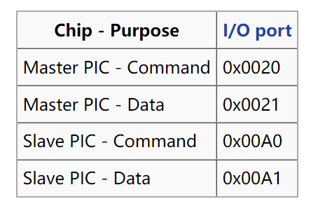
在IDT中，PIC_MASTER使用0x20-0x27 vector呼叫handler，PIC_SLAVE使用0x28-0x2F呼叫handler
PIC_SLAVE链接到PIC_MASTER的2号vector
Initialization:
- mask掉所有interrupt（向data port传入0xff）
- 先给予0x11 command，然后PIC会等待接下来3个传入参数进行初始化（ICW1)
- 接下来确定在IDT中的位置(ICW2)
- 决定Master和Slave的cascade状况(ICW3)
- 最后向Data port传入这是x86模式，以适配x86模式进行工作
主要对着Lecture10 PPT写即可
enable_irq / disable_irq:
PIC内部存在一个register Interrupt Mask Register，共8bit，当对应bit位被set为1时，PIC会忽略对应位置irq。注意: mask数字高的irq不会影响数字低的irq（priority更高的irq）
先判断irq是否超过7，若超过7，向PIC_SLAVE的data port传入数据，否则向PIC_MASTERdata port传入数据
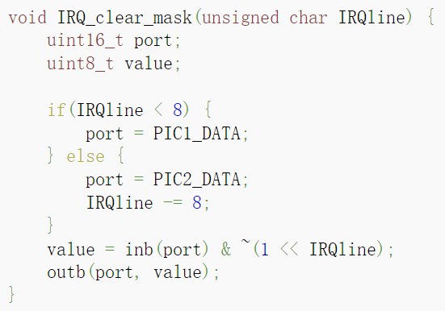
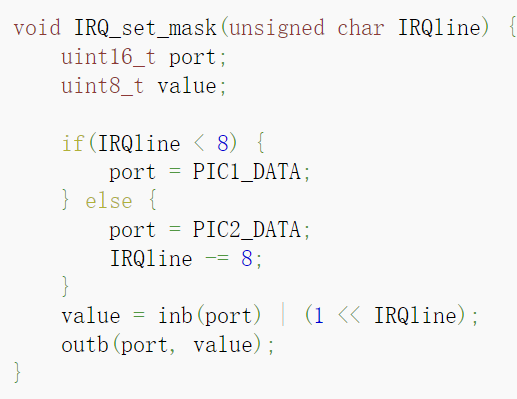
send_EOI:
同样需要检查irq number。无论如何都要给MASTER command port send EOI，如果是SLAVE的handler结束，那就给SLAVE也补上
注意: 我们的代码中EOI在send之前需要和irq做一个OR操作，以告知PIC是哪一个irq结束
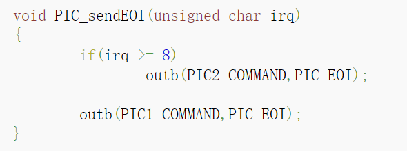
补充：以上函数均需要做sanity check，不允许传入的irq number是一个0-15以外的数值
RTC
RTC可以以多个频率运行，基础频率32.768kHz，可以用divider register改变，但是不要变，要不然不准。对于interrupt，默认产生interrupt的频率是1024Hz，可以自行修改，the RTC can theoretically generate 15 interrupt rates between 2 Hz and 32768 Hz (2^1-2^15)
RTC handler期间，禁用NMI，否则导致RTC变成不可用状态
RTC使用port 0x70和0x71，0x70用来指示用哪个register，0x71包含数据。在选择register时可以顺带mask掉NMI
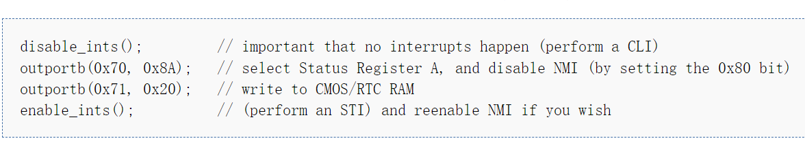
Initialization:
- 打开IRQ8 这里reset原因是每次读写完之后，port 0x70的内容都会被清零，需要重新指定register，然后在这之后要
enable_irq(8)
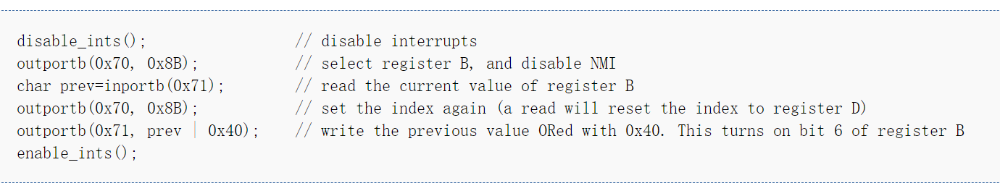
-
选择interrupt产生的frequency
寄存器A的低4位，是divider value，默认位0110即6，所以默认frequency = 2^15»(6-1) = 1024
设置好寄存器A的低4位(称为rate)后，最终frequency = 2^15 »(rate-1)
rate最低只能选3，低于3会roll over，导致interrupt频率不准
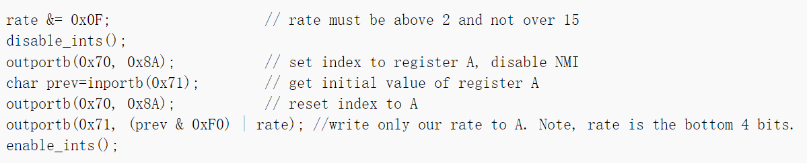
handler:
需要使用一个全局变量，并且需要volatile，来记录RTC产生interrupt的次数，当做时钟
这个数字，除以frequency，就可以得到当前过了多少秒，或者多少ms
-
if register C is not read after an IRQ 8, then the interrupt will not happen again
在每次handler之后需要加入一段
-
然后send_EOI，STI
Keyboard
键盘本身属于PS/2 controller，使用PS/2的port。读取键盘内容从0x60端口获得，connect to irq1
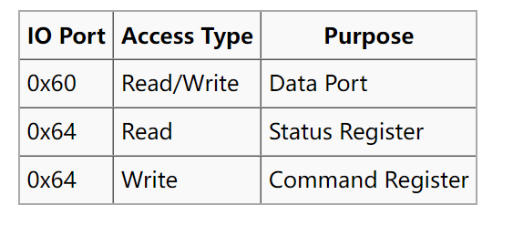
command为一个byte，键盘会response “ACK” (to acknowledge the command) or a “Resend” (to say something was wrong with the previous command)
scan code set会表示哪个键被下压。scan code可能不止一个，最多6个bytes。当keyboard状态机知道现在scan code已经全部获取了，就可以将其转化成key code了。
我们的键盘属于US QWERTY，用SCAN CODE SET1
Initialization:
只需要enable_irq即可
handler:
- 从port中读取数据
inb(0x60) - 利用提前建好的table对应ASCII
- 检测是否为特殊键 shift caps…. 如果是，暂时不做任何操作（或者可以在这个ckpt就把这个东西弄好）
- 对普通键，对应ASCII码并putc
- send EOI
Paging
reference: https://wiki.osdev.org/Paging
kernel.c
在 kernel.c 的 entry函数中添加 page_init函数， 调用 page.c中初始化分页的代码
/* Init the PIC */
i8259_init();
/* Init paging */
page_init();
page.c, page.h
- 在新文件
page.h以及page.c中定义相关函数和数据结构- page table需要自定义数据结构，参照OSdev或者x86手册
- 定义函数
- 需要完成对 page directory table 和 两个 page table 的初始化，并且写入内存中对应位置。page init部分实际上就是修改创建好的page tables中各个bit的值，对应所需要开启的paging部分
- 需要操作 CPU 的
cr0,cr3,cr4寄存器，告知硬件page directory的位置并为 paging 开启硬件支持。这一步相当于激活上面一步初始化好的page directory和page table - cr0用于开启paging cr4用于开启4MB page cr3为TLB，即指示page directory位置
page directory entry 和 page table entry 的结构：
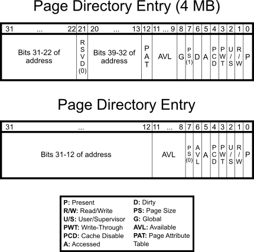
Checkpoint 2
Terminal Driver
ToDo:
- 完善键盘映射：Shift、CapsLock（Ctrl和Alt也需要用全局变量追踪，暂时没有更多作用——TA）
- 光标追踪：让打的字出现在光标处，需要支持上下滑动（其实只有向上；可以不用保留command history）。还需要支持Ctrl+L/Ctrl+l的清屏操作
- 还需要支持退格键（直接改变光标）和行缓冲输入，缓冲区大小128B
read:
从keyboard buffer中读取写入的字符，转移到terminal buffer中，返回读取的bytes总数
设置while循环，不断通过键盘向keyboard buffer中增加内容，扫描到enter才返回。缓冲区换入127个字符时，拒绝新进入的字符（停止更新缓冲区），等待一个enter的输入。（最后一个字符应为\n）
对于terminal，read多少字符，就把buffer中的多少个字符给清空，并将后面的挪动到前面来
******^ 其实可以直接覆写******
read有两种情况会终止，第一种是read到指定byte数目，第二种是碰到了\n（其实只有一种？）
**********************^ 只在读到\n时返回即可，越界时直接忽略后面的字符**********************
write:
从传入的buf中读取所有内容，转移到屏幕上，返回written bytes数目或者-1
注意需要滚动换行↓的情况：打印字符计数达到80时触发scrolling函数
**scrolling:**
可能要修改putc函数，将上方所有内容向上移动一行，把最底下一行清空，然后再打印新的字符（直接更新vmem）
**clear:**
lib.c中的clear函数只有清理video memory的操作，没有重置下一个character应该出现的位置
↑但仍然是好事，差点就要写循环往vmem里赋零了（）
Read-only File system
ToDo:
- open and read a file system image
- copy program images into physical memory
**基本数据结构**
每个Block 4kB，第一个block称为boot block，包含file system的整体统计信息（dir数量、inode数量、数据块数量）和所有的directory。统计信息、每个directory均占据64B
第一个directory总是代表当前directory，命名为.（一个点），所以实际上最多只能有62个其他files
每一个directory包含：32B文件名（不一定要包含EOS，也即未必有”\0”标记字符串尾）、4B文件类型、4B inode索引
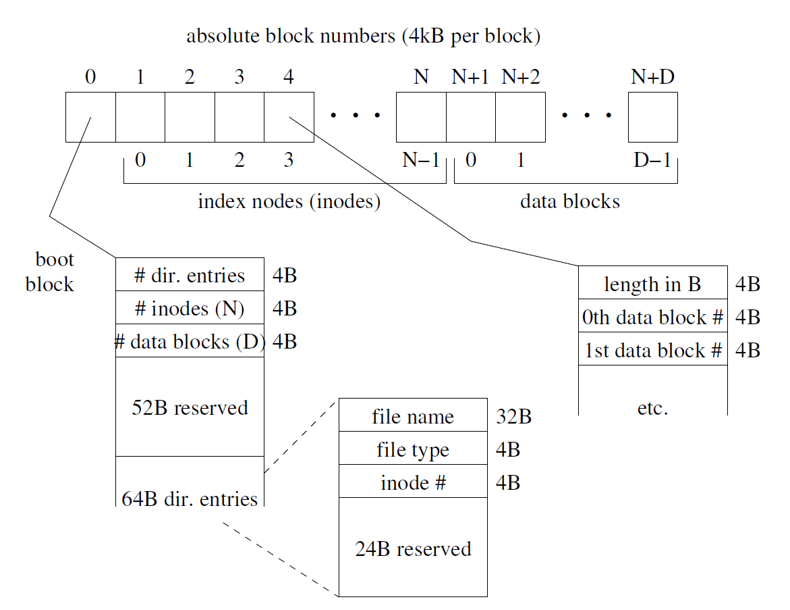
file type 0 代表user level可以触碰的RTC，1 for directory，2 for regular file。对于RTC和directory，#inode是没有意义的。
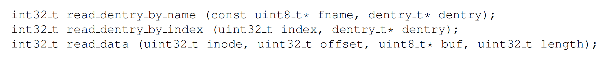
以上三个函数都是失败return -1（fname不存在/index不合法/#inode不合法/inode中数据块索引不合法）。前两个函数成功都会将dentry指针赋值成所需要的那个directory数据，第三个函数相当于“read”这一system call，返回读取了多少个byte
****与Task的联动：****
每一个task最多开启8个file，它们被存在一个file array中，而file descriptor就是用来在array中找寻这些file的。file array中的每一个元素都应该储存以下四种信息
- 对应这个file的各种操作函数，open, read, write, and close to perform type-specific actions for each operation.
- inode number，对于directory或者RTC就是0
- file position，指示用户在什么位置开启了这个file，由read system call更新
- flag，用来指示当前descriptor正在使用
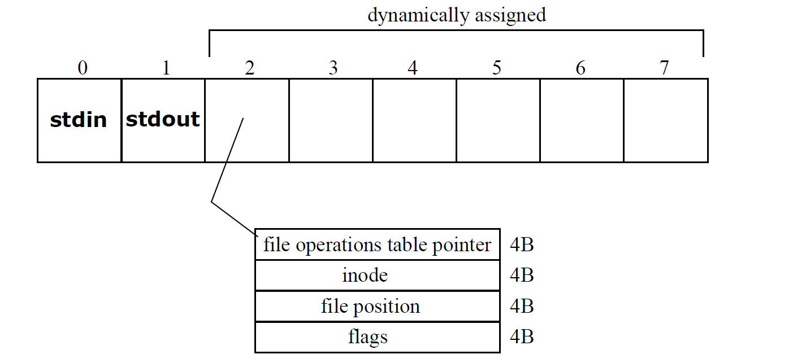
open a file的流程：储存对应的jump table pointer，将flag设置成in-use
**********filesystem_init**********
-
找到File img的开头地址，File的所有信息在boot的时候就已经帮我们储存在了内存的某一个地方
根据文档，每一个img都算是一个module，可以load进去
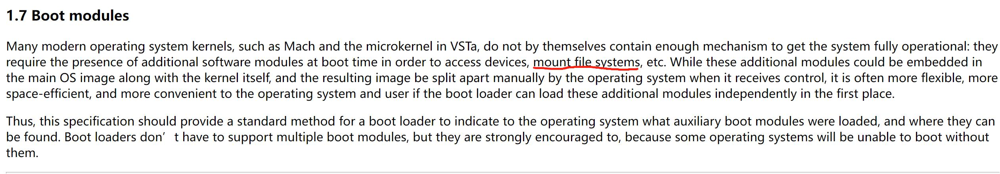
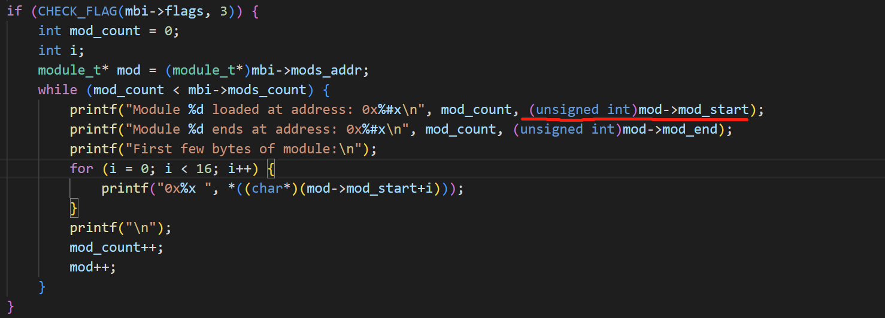
- 在
kernel.c里进行file system初始化，将上面找到的指针传递给file system - 传入的地址是boot_blcok的开头，直接将一个全局变量boot_block_ptr指向这个地方
- boot_block中的3个num信息，赋值给3个全局变量，用于储存有多少个directory，有多少个inode，有多少个data_block
- 根据各个数字，找到inode的开头和data_block的开头，并将这两个地址储存在另外两个ptr中，以备后续使用
tips：因为文件系统只读不写，可以用静态的全局变量储存这些所有信息
Three base functions
**read_dentry_by_index:**
- sanity check，如果index超出dir_num，return -1
- 将boot_block中的
dentries[index]值赋给传入的dentry指针- 赋值过程中，filename必须用
lib.c提供的strncpy，因为filename允许没有string结尾符\0
- 赋值过程中，filename必须用
**read_dentry_by_name:**
- 设置一个index变量，遍历所有在boot_block的file name，每次index++
- index++之后做check，如果已经超出dir_num，return -1
- 如果匹配到（利用
lib.c中提供的strncmp），呼叫read_dentry_by_index(index, dentry)，让read_dentry_by_index完成真正的赋值操作
******read_data:******
- sanity check，确认(file总长度-offset)>0 并且 inode_index < boot_block拥有的inode数目-1
- 找到对应的inode，
inodes_arr[i] - 计算需要从哪个data_block的哪个位置开始读取 offset / block_size + offset % block_size
- 计算读取到哪个data_block的哪个位置
- 开始循环复制数据到buff中，同时要检测是否需要更换另一个data_block
问题：我们需要在这里实现file descriptor array吗？暂时不需要，在之后的scheduler部分出现了task struct再实现
The Real-Time Clock Driver
reference:https://wiki.osdev.org/RTC
做到和RTC交互，让user直接修改它的频率，最好能虚拟化
虚拟化可以采用一个全局变量counter，每次interrupt产生都++，这里的interrupt看做是一个基础interrupt，采取最高频率，即1024Hz
对于不同频率，如果counter自这个read函数被创建后过了 1024/frequency次，则return
例如：虚拟化的RTC_read需要一个512Hz的RTC，那么过了1024/512=2个interrupt后return
可能需要一个array，全部entries初始化为1，对不同的虚拟的RTC device储存各自的频率，interrupt实际上只改变counter。在后续ckpt中，有多个terminal，每一个terminal上执行的程序可能会设置不同的RTC频率，对应这个array中的一个freq
open:
将freq改为2Hz，返回0。flag设置为0。后续到了多进程时，freq和flag都有多个，每个进程对应一对freq和flag。
close:
返回0（文档如此）
read:
跟踪全局flag，用一个while loop让read函数陷入循环，直到flag被设置成1，跳出循环。跳出时再重新将flag设置为0，return。这样可以达到一种类似于linux中sleep的效果。
****write:****
先做sanity check，如果都通过，根据传入的frequency设置freq。此时暂时只有一个terminal，没有进程之间的切换，在后续ckpt中需要检查当前write指令是由哪一个进程调用的，修改这个进程对应的freq
handler:
使counter++，检查是否度过了freq个单位时间，如果是，将flag设置为1。设置为1的时候，之前某次调用的read函数就会返回。
具体相关端口，对rtc的交互请查看reference（OSdev）
Checkpoint 3
System Calls
int $0x80呼叫，最多接受三个参数
call number, arg1, arg2, arg3 → EAX, EBX, ECX, EDX
成功return 0，失败return -1，返回值放在EAX
一部分不会返回（如halt）
open
在文件系统中找到文件，分配一个空闲的描述符并初始化（注意文件类型）
close
检测描述符合法性，后释放描述符
read
从RTC/键盘/文件/目录读取数据，返回读取的bytes数量
RTC：接收到virtual interrupt时返回0
键盘：读取到\n时 或 buffer满时返回
文件：读取到EOF时 或 buffer满时返回
File Position指读取位置
system call的传入参数性质也决定了我们需要为它们编写一个wrapper(link)来保证参数正常传递
Wrapper & Linkage
需要实现的10个system call最多只有三个参数，用asm写wrapper （这部分并不归我们写，提供的可执行文件包含了这部分wrapper）
在IDT的0x80号位置调用包装函数
- callee saved
- 获取arguments，根据数目不同从EBX, ECX, EDX中获取
- 获取system call number，
int 0x80 - restore callee saved
System call handler
- save all registers
- check system call number is valid or not
-
利用已有的function table找到对应system call，从call之后的stack来看，获取参数应该在每一个system call所对应的函数之内 — 问题：如何让一个C function直接从寄存器中读取数值，fastcall？
或者另一种解决办法，直接在system call handler中恢复C convention
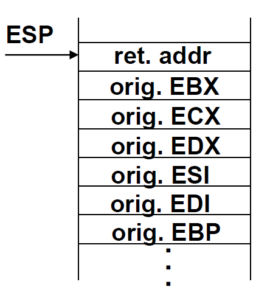
- 检查返回值，失败与成功
- restore register
- 重新设置关于iret所需要的一切
- iret
Execute sys call具体流程
尝试加载一个新的程序
接收参数command（字符串）是一个以空格为分界的一连串words，第一个word是file name，之后的都由getargs获得
无法执行（命令不存在、非可执行文件）返回-1，Exception返回256，halt返回0~255的值
Parse args
对于file name，直接取出第一个空格之前的所有内容即可，写一个loop，直到char == ’ ’停止
其他的arguments暂时好像用不到
Check file validity
- 利用file name检查file中是否存在一样的文件，在这里利用read_dentry_by_name时可以把信息存在一个dentry变量中，接下来需要使用
- 再读取这个file的前4个bytes（read_data)，查看它是否是一个可执行文件
- 在这里也可以直接获取program第一条指令执行的位置（read_data），储存在可执行文件的24-27bytes
Create PCBs
寻找到pid，当前是第几个process
为PCB分配空间，初始化，设置为active，其中kernel stack根据不同的pid有不同的值
Open File descriptor for stdin/stdout
Set up paging
需要知道当前是第几个process，我们应该可以假设最多只有3个process（像PPT上一样）
直接在Page Directory中 ( 0x8000000(128MB) »22 )，即2^5=32位置修改映射
phy add = 0x800000 + pid*4MB 将 PD[32]对应的4MB page起始点修改为 phy add »12即可
记得flush tlb，即重新载入一遍cr3
/*
* set_user_prog_page
* Set page for a user program
* input: pid -- the pid of the user program
* output: None
* side effect: Change the paging directory; Change CR3; flush TLB
*/
Load file(program) into memory
file的起始点为USER_CODE 0x8048000
Prepare for context switch
mp3 system中只有一个tss，就是在x86_desc.h中的tss变量，在回到user level之前，tss中的相关参数需要被更新
不需要考虑schedule的情况下，只需要更改tss的值即可，在soft multitasking中，tss只有两个值是相关的，更改SS0为kernel ds，ESP0为当前process的stack，即8MB-8KB*(pid)-1个byte、
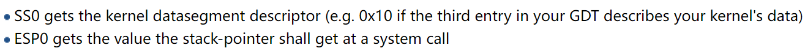
iret需要的五个参数：
- user ds，直接用x86_desc.h中的user ds；
- esp，user stack，位于128MB-132MB这一段memory的末尾，即132MB-4byte；
- eflag，直接把当前的flag push进去可行吗？
- cs，tss中的user cs；
- eip，把上面储存的user program第一条指令对应的地址拿过来
Halt sys call具体流
终止进程并返回母进程
Shell —”execute” syscall (when cmd is typed)→ Program
Program —”halt” syscall (when “return”)→ Shell
很重要的一点，如果我们要检测是否exception，需要在原来的exception while1改成呼叫halt的函数
halt的总体思想，利用parent process在kernel stack上存好的context来iret，以此回到parent process的user level
- 首先check这是否是exception呼叫的
- 再看一下是否是shell，如果是shell本身出问题，需要重启shell，因为它是第一个program，不能被完全杀死
- 关闭file descriptor，将开启了的file均关闭，因为如果不关闭，之后重新利用这段pcb的时候会发现许多file都是“开启”状态
- 将当前的process设置为non-active
- 找到parent，并从parent的pcb中取出信息，将paging设置为parent program所需要的
- 将tss更新成parent的信息，SS0=kernel ds，ESP0=parent kernel stack
- 再从parent pcb中找到之前的context信息，具体而言，是从parent pcb中重新取回之前的ebp和esp，之后再leave+ret就相当于从execute这个syscall的地方返回，直接用这些context信息来进行iret
Tasks
此次不用完成scheduler，但需要在某一个program产生exception时回到shell
所有tasks共享一个4MB内核态分页。对于一个而言，其task映像（代码）的物理地址是固定的而且每个小于4MB，分配一个用户态分页即可。
Loader
在文件系统驱动中，将程序代码从随机分配&排列（也即分散）的4kB disk blocks拷贝到连续的物理地址中
注意维护栈，拷贝在内核态执行，拷贝结束后要回到用户态
Executing User-level Code
注意内核态程序不能调用用户态程序，要实现privilege switch
IRET的正常运行要求提供ESP EIP EFLAGS CS SS等寄存器值
EIP → 位于可执行文件24~27B的entry point
ESP → 载入可执行文件的4MB分页末尾
CS → user code segment
DS → user data segment
SS → user stack segment （有声明吗？）
而且需改变TSS
Process Control Block
需储存的Per-Task State包括
File array（记录开启的文件）
Signal information → extra credit内容，可以不识闲
Kernel stack（每个8kB）
两个task的kernel stack分别占用第4080~4087、4088~4095kB
parent pid
excute_ebp / excute_esp 用于halt
Checkpoint 4
getargs
在execute内调用
参数（以字符串的形式）存储在PCB，裁剪（头部）可执行文件名&空格、（尾部）空格
例：在Shell #0中运行” cat arg1 arg2 “，将”arg1 arg2”存入PCB #1（注意空格数量）
步骤
在buf中传入用户输入的命令
检测头部空格结束的位置、尾部空格开始的位置
将两个位置之间的args字符串拷贝进PCB（args之间可以有任意数量空格，交给user program处理）
成功返回0，失败（args**************************+NULL**************************太大/检测不到args）返回-1
最好把PCB #0（shell）的args字符串设置为”\0”
vidmap
需要DPL = 0以访问物理内存vmem，影响安全性。解决方案为将vmem映射到虚拟内存
*screen_start指向虚拟内存地址（用户给定）
双重指针的作用是允许访问整个新的4kB page
// implimentation
uint8_t* screen_start = vidmap();
// or
uint_t* screen_start;
vidmap(screen_start);
步骤
检查*screen_start的合法性：应大于128MB，小于132MB（？）
修改PD和PT实现mapping，将DPL设置为3供用户访问（？）
成功返回0xB8000，失败返回-1
Checkpoint 5
Multiple Terminals
3个terminal，最多同时运行6个程序
Initialization
- Initial bootup: 在系统启动时就初始化三个进程
- After bootup: 用Alt+F1/F2/F3切换，当用户第一次按下ALT+F2/F3时开启新的terminal
Separate I/O buffer
每一个terminal结构体中存储独立的I/O buffer、光标、显示屏上的文字、active flag
在切换出terminal的时候存起来，切换回来的时候重新载入
Isolation
退出某一个terminal的shell时，不会立即重启，直到把最后一个shell也退出时才需要重启shell
在halt修改一下重启条件，判断是否是最后一个shell
Switch
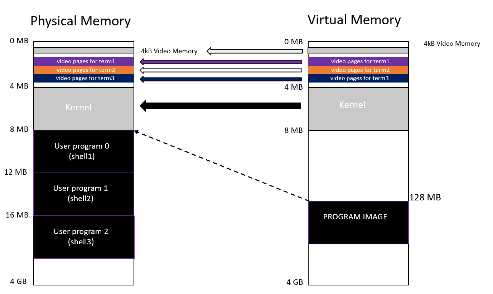
multi terminal 内存示意图
需要新分配三块backup video memory，类似build buffer的作用，每一块都储存着当前terminal的video memory，在切换的时候进行载入
步骤
在terminal.c中定义void switch_terminal(uint8_t term_index)函数，在keyboard.c中调用
- Sanity check，传入index是否越界
- 判断term_index是否为当前current_term_index（全局变量），若是则直接返回
- 切换流程(以从terminal1切换到terminal2为例子)
- video map到current terminal，即让0xB8000指向phyiscal的0xB8000
- 将当前vmem存到属于terminal1的backup内存块（term1 video page）中
- 将terminal2的backup内存块载入vmem
- 设置光标位置，此时屏幕更新完成
- 更新全局变量current_term_id
- video map到当前正在schedule的process
tips: video map指的是更新virtual 0xB8000指向的physical memory映射关系，以下为函数的描述
/* remap_vidmap_page
* Set page for video memory for a specific terminal.
* If terminal_id = active one, directly write into physical memory.
* If terminal_id != active one, map user video memory to corresponding backup buffer.
* input: screen_start -- starting address of the video memory
* output: None
* side effect: Change the paging directory; Change CR3; flush TLB */
Scheduling
跟踪所有活跃的task，每隔10-50ms轮流切换执行
被暂停的task不应该打印信息，需要动态更新page table以将显示映射到0xB8000以外的地方
PIT
reference: OSDEV Link for PIT
Scheduling中计时使用PIT而非RTC，因为RTC的优先级太低了
在PIT发生一次interrupt时调用handler（在IDT中注册），在handler中进行一次schedule操作
使用Chanel0作为I/O Port 0x40 Channel 0 data port (read/write)
向0x43 port写入选择的channel，mode
Scheduler
在进行具体流程之前，必须明确一个事实。一个不是正在执行的process的stack上，必然是scheduler的残留信息，因为process只要开始执行，只有两种可能退出当前stack：
- 执行完毕，返回user space
- 还未执行完毕，但是被scheduler强制退出，去往其他process
所以只要我们发现可以找到next process，那这个process一定是属于2情况，即stack上残留了上一次scheduler未return的所有信息，在接下来的task switch中，以为switch的时候依然使用的是scheduler的代码，直接更改esp、ebp即可
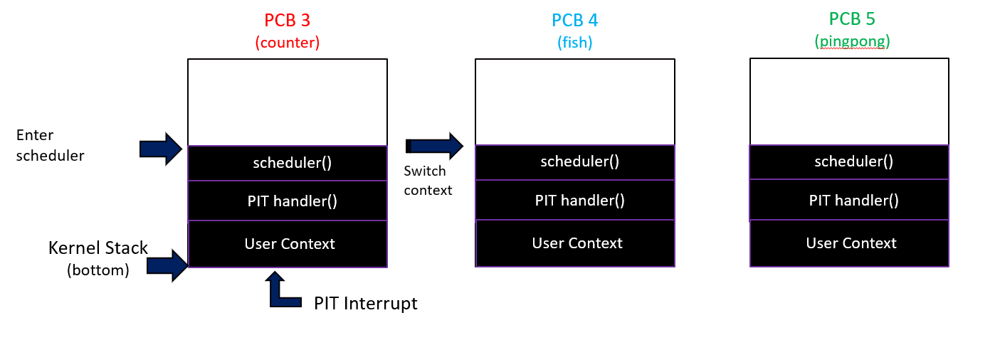
步骤
核心思想1：scheduler通过更改esp, ebp实现在kernel stack之间的切换
- PIT产生interrupt，在其
pit_handler中呼叫scheduler_linkage (asm) - 进入scheduler后，先储存本次scheduler进入时的ebp，储存到
pcb→sch_ebp中 - 找到在schedule array中的下一个需要被schedule的process，以下称为
next process，并更新cur_sch_index（用来指示当前schedule是哪个process的变量） - 若next process的pid为-2(TERM_NOT_INIT宏)，代表下一个terminal上还没有被初始化任何进程
-
remap_video_page(cur_sch_index)接下来的一切和video相关操作会作用在即将新开启的shell process上 - 执行
execute('shell')
-
-
如果下一个terminal已经有进程可以被schedule了：为进入user space做准备，对user program的map进行调整，即对program image进行更改
将user program部分指向physical memory中next process的program image。和execute使用一个更改user program paging的函数
/* set_user_prog_page * Set page for a user program * input: pid -- the pid of the user program * output: None * side effect: Change the paging directory; Change CR3; flush TLB */ - 改变TSS，为回到kernel space做准备
- remap user video memory
-
准备context switch到即将切换到的process
不能直接使用iret，而是重新载入另一个process的ebp，只是相当于换了一个kernel stack
- 在scheduler中，将next process
pcb→ sch_ebp取出来，这个ebp储存的是上一次从刚刚进入scheduler时的stack state - 将这个pcb→sch_ebp赋值给ebp，再leave+ret，实际上是从next process kernel stack上回到了pit handler
- 在scheduler中，将next process
- 在切换stack之后，回到了PIT handler，PIT handler再return，则可以利用PIT lnk(asm)中的iret，可以switch到next process的user space
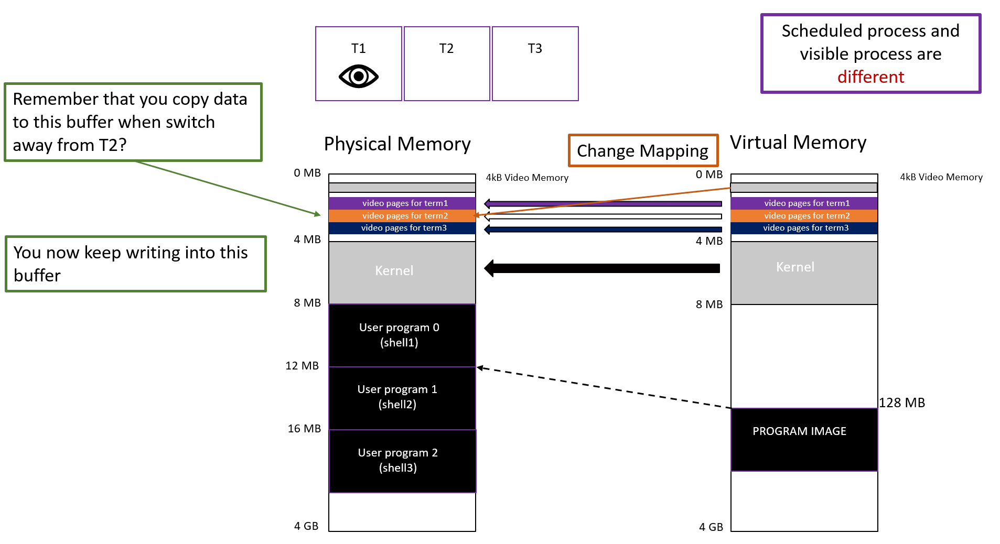
virtual的0xB8000指向scheduled process的backup buffer，如果和display terminal是一个，则指向physical的0xB8000
键盘的字符永远要输入到physical的0xB8000
Video memory problems
上述实现逻辑会造成video memory出现一定的错乱问题，需要对lib.c中的putc函数进行一定的更改
keyboard interrupt呼叫putc，默认朝0xB8000进行输入。但在schedule过程中，0xB8000因为video_remap的原因，未必时刻指向真实的video memory，可能指向backup buffer。但实际上，keyboard的输入应该显示在当前展示的terminal上，而非当前scheduled的terminal上。
而terminal_write中呼叫的putc，则需要显示在当前scheduled的terminal上，而非当前展示的terminal，这与keyboard逻辑有所不同
在已经提供的许多user program中，大多数向屏幕上打印的方法是呼叫terminal_write，而fish.c是使用vidmap直接获取地址然后修改值
这一部分比较繁琐细碎，但并不困难，这个笔记里不过多赘述。
Extra Credit
Memory Allocation
Two types of memory management
- Fixed length memory allocation
- Varaible length memory allocation
Fixed length — Slab Cache
In this specific implementation, fixed length memory allocation is implemented by two parts, memory management unit and memory unit.
fixed length diagram:
|memory management unit| |memory management unit| |memory management unit| .......... |memory unit| |memory unit| |memory unit| .....
|next| ---------------> |next| ---------------> |next| ↑ ↑ ↑
|ptr|---------------------|ptr|---------------------|ptr|---------------------------------------↑--------------↑-------------↑
Data structure: Linked list
- Slab_Create ( name , size )
- destroy , malloc , free
- Automatically shrinks and grows
- quick and fast to allocate and free
- granularity: 1byte - 4kB-8 bytes
Variable length — Implicit free list
On the other hand, variable length memory allocation is implemented very similar to Linux's implicit free list design.
A memory part consists of two parts, memory management unit and real useable memory unit.
Memory management units are held in a linked list to track each memory fragments have been allocated.
variable length diagram:
|memory mangement unit| -> |memory mangement unit| -> |memory mangement unit| -> |memory mangement unit|
----------------------- ----------------------- ----------------------- -----------------------
| | | | | | | |
| useable memory | | useable memory | | useable memory | | useable memory |
| | | | ----------------------- | |
| | ----------------------- -----------------------
| |
-----------------------
Slab cache's implementation is based on fixed length memory allocation.
Data structure: Implicit free list
- varmalloc( size )
- flexible: can allocate any size
- granularity: 1byte - 4MB
Signal
Support users to set handler they define
Support sigreturn and set_handler syscall
Support five signals:
- SIG_DIV_ZERO
- SIG_SEGFAULT
- SIG_INTERRUPT
- SIG_ALARM
- SIG_USER1
ATA Hard Disk Support & File System
-
Writable file system
write fname contents - Persistent Change (after reboot) by saving the change to the hard drive
- How the file system is loaded and initialized:
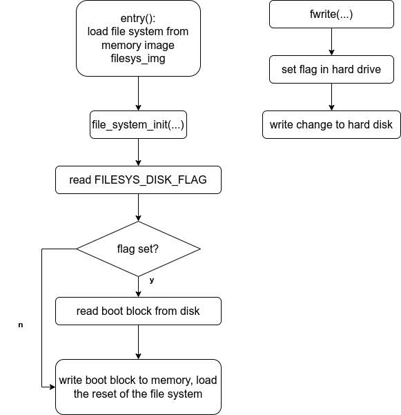
Speaker Driver
Toggle ****NumLock**** to turn on/off
Key mapping:
(C3~E4) ZSXDCVGBHNJM,L.;/
(C4~G5) Q2W3ER5T6Y7UI9O0P[=]
Runs concurrently with any user programs & across terminals
Enjoy Reading This Article?
Here are some more articles you might like to read next: